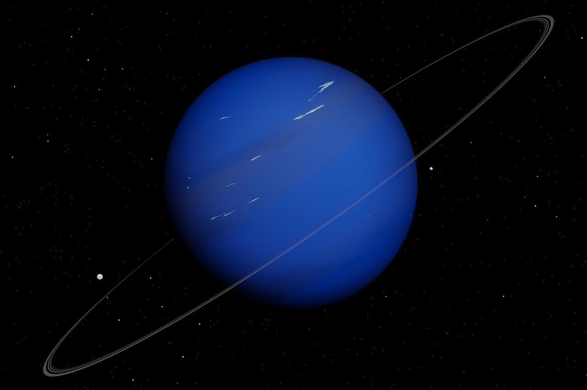
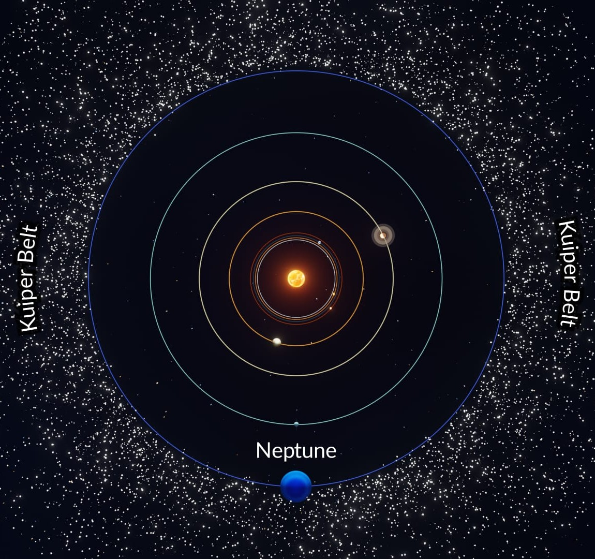
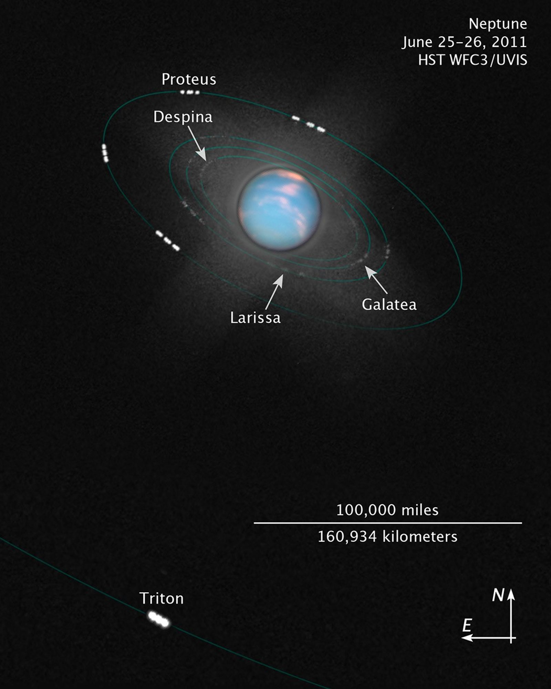
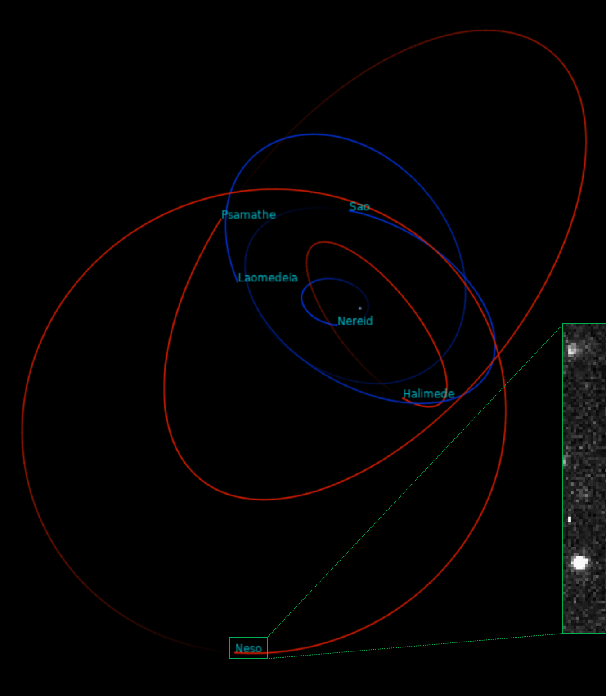

History
Discovery and Namesake
Galileo recorded Neptune as a fixed star during observations with his small telescope in 1612 and 1613. More than 200 years later, the ice giant became the first planet located through mathematical predictions rather than through regular observations of the sky. Because Uranus didn't travel exactly as astronomers expected it to, French mathematician Urbain Joseph Le Verrier proposed the position and mass of a then-unknown planet that could cause the observed changes to Uranus' orbit. Le Verrier sent his predictions to Johann Gottfried Galle at the Berlin Observatory, who found Neptune on his first night of searching in 1846. Seventeen days later, Neptune's largest moon Triton was discovered as well.
Potential for Life
Neptune's environment is not conducive to life as we know it. The temperatures, pressures, and materials that characterize this planet are most likely too extreme, and volatile for organisms to adapt to.
Rings
Neptune has at least five main rings and four prominent ring arcs that we know of so far. Starting near the planet and moving outward, the main rings are named Galle, Leverrier, Lassell, Arago, and Adams. The rings are thought to be relatively young and short-lived.
Size and Distance
Neptune has at least five main rings and four prominent ring arcs that we know of so far. Starting near the planet and moving outward, the main rings are named Galle, Leverrier, Lassell, Arago, and Adams. The rings are thought to be relatively young and short-lived.
Orbit
One day on Neptune takes about 16 hours (the time it takes for Neptune to rotate or spin once). And Neptune makes a complete orbit around the Sun (a year in Neptunian time) in about 165 Earth years (60,190 Earth days). Sometimes Neptune is even farther from the Sun than dwarf planet Pluto. Pluto's highly eccentric, oval-shaped orbit brings it inside Neptune's orbit for a 20-year period every 248 Earth years. This switch, in which Pluto is closer to the Sun than Neptune, happened most recently from 1979 to 1999. Pluto can never crash into Neptune, though, because for every three laps Neptune takes around the Sun, Pluto makes two. This repeating pattern prevents close approaches of the two bodies. Neptune’s axis of rotation is tilted 28 degrees with respect to the plane of its orbit around the Sun, which is similar to the axial tilts of Mars and Earth. This means that Neptune experiences seasons just like we do on Earth; however, since its year is so long, each of the four seasons lasts for over 40 years.

Moons
There are 16 known moons of the planet Neptune, fourteen of which are named after water deities and creatures in Greek mythology. The largest is Triton, discovered by William Lassell on 10 October 1846, 17 days after the discovery of Neptune itself. Over a century passed before the discovery of the second natural satellite, Nereid, in 1949, and another 40 years before Proteus, Neptune's second-largest moon, was discovered in 1989.
Triton is unique among moons of planetary mass in that its orbit is retrograde to Neptune's rotation and inclined relative to Neptune's equator, which suggests that it did not form in orbit around Neptune, but was instead gravitationally captured by it. The next-largest satellite in the Solar System suspected to be captured, Saturn's moon Phoebe, has only 0.03% of Triton's mass. The capture of Triton, probably occurring some time after Neptune formed a satellite system, was a catastrophic event for Neptune's original satellites, disrupting their orbits so that they collided to form a rubble disc. Triton is massive enough to have achieved hydrostatic equilibrium and to retain a thin atmosphere capable of forming clouds and hazes.
Inward of Triton are seven small inner moons, Neptune's only regular satellites, all with prograde orbits close to the planet's equatorial plane; some orbit among Neptune's rings. Including the largest, Proteus, they were re-accreted from the rubble disc formed after Triton's orbit became circular. Beyond Triton, Neptune has eight outer irregular satellites: four retrograde and four prograde. Among the prograde satellites is Nereid, the largest of the eight outer moons, which orbits much farther from Neptune at a high inclination. Its orbit is unusually close and highly eccentric for an irregular satellite, suggesting it may once have been a regular satellite significantly perturbed when Triton was captured. The outermost moons of Neptune are the furthest moons from their primaries in the Solar System.


There are 16 known moons of the planet Neptune, fourteen of which are named after water deities and creatures in Greek mythology. The largest is Triton, discovered by William Lassell on 10 October 1846, 17 days after the discovery of Neptune itself. Over a century passed before the discovery of the second natural satellite, Nereid, in 1949, and another 40 years before Proteus, Neptune's second-largest moon, was discovered in 1989.
Triton is unique among moons of planetary mass in that its orbit is retrograde to Neptune's rotation and inclined relative to Neptune's equator, which suggests that it did not form in orbit around Neptune, but was instead gravitationally captured by it. The next-largest satellite in the Solar System suspected to be captured, Saturn's moon Phoebe, has only 0.03% of Triton's mass. The capture of Triton, probably occurring some time after Neptune formed a satellite system, was a catastrophic event for Neptune's original satellites, disrupting their orbits so that they collided to form a rubble disc. Triton is massive enough to have achieved hydrostatic equilibrium and to retain a thin atmosphere capable of forming clouds and hazes.
Inward of Triton are seven small inner moons, Neptune's only regular satellites, all with prograde orbits close to the planet's equatorial plane; some orbit among Neptune's rings. Including the largest, Proteus, they were re-accreted from the rubble disc formed after Triton's orbit became circular. Beyond Triton, Neptune has eight outer irregular satellites: four retrograde and four prograde. Among the prograde satellites is Nereid, the largest of the eight outer moons, which orbits much farther from Neptune at a high inclination. Its orbit is unusually close and highly eccentric for an irregular satellite, suggesting it may once have been a regular satellite significantly perturbed when Triton was captured. The outermost moons of Neptune are the furthest moons from their primaries in the Solar System.


Structure
Neptune is one of two ice giants in the outer solar system (the other is Uranus). Most (80% or more) of the planet's mass is made up of a hot dense fluid of "icy" materials – water, methane, and ammonia – above a small, rocky core. Of the giant planets, Neptune is the densest. Scientists think there might be an ocean of super hot water under Neptune's cold clouds. It does not boil away because incredibly high pressure keeps it locked inside.
Neptune does not have a solid surface. Its atmosphere (made up mostly of hydrogen, helium, and methane) extends to great depths, gradually merging into water and other melted ices over a heavier, solid core with about the same mass as Earth.
Neptune's atmosphere is made up mostly of hydrogen and helium with just a little bit of methane. Neptune's neighbor Uranus has a similar makeup; the methane absorbs other colors but reflects blue, giving these ice giants their similar hue. Many images of Neptune, coming from the Voyager 2 flyby in 1989, show Neptune as a much deeper blue. This was because the Voyager team tweaked the images, to better reveal clouds and other distinctive features on the planet, compared to the hazy, uniform view of Uranus that Voyager 2 had captured in 1986. Researchers in 2024 re-processed the images, showing the planets look much more alike than many thought. Neptune is our solar system's windiest world. Despite its great distance and low energy input from the Sun, Neptune's winds can be three times stronger than Jupiter's and nine times stronger than Earth's. These winds whip clouds of frozen methane across the planet at speeds of more than 1,200 miles per hour (2,000 kilometers per hour). Even Earth's most powerful winds hit only about 250 miles per hour (400 kilometers per hour). In 1989 a large, oval-shaped storm in Neptune's southern hemisphere dubbed the "Great Dark Spot" was large enough to contain the entire Earth. That storm has since disappeared, but new ones have appeared on different parts of the planet.
The main axis of Neptune's magnetic field is tipped over by about 47 degrees compared with the planet's rotation axis. Like Uranus, whose magnetic axis is tilted about 60 degrees from the axis of rotation, Neptune's magnetosphere undergoes wild variations during each rotation because of this misalignment. The magnetic field of Neptune is about 27 times more powerful than that of Earth.